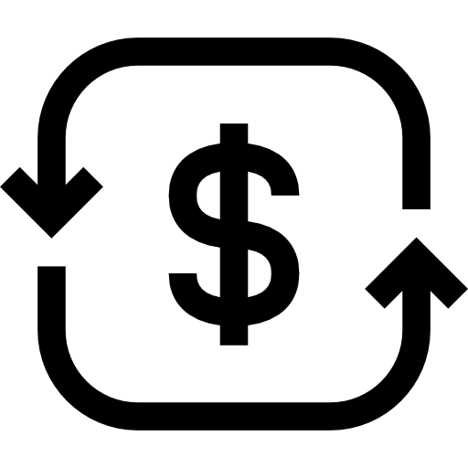

경제 뉴스 브리핑 — 2026년 11월 24일 (화)| 종목 | 가격 | 변동 |
|---|---|---|
| 🟢 S&P 500 | 7,237.17 | ▲ 4.73% |
| 🟢 나스닥 | 24,089.56 | ▲ 6.51% |
| 🟢 반도체 ETF | 140.22 | ▲ 13.63% |
| 🟢 엔비디아 | 165.05 | ▲ 31.48% |
| 🟢 COMEX 금 | 3,651.40 | ▲ 0.00% |
| 🔴 달러/원 환율 | 1,341.87 | ▼ 0.18% |
| 🟢 WTI 원유 | 80.17 | ▲ 0.00% |
제주 취업자 늘었지만…경제‧관광 등 활력 주춤: 제주 지역의 취업자 수는 증가했으나 비임금근로자 비중이 높아지면서 경제 활력이 저조한 상황이다. 관광객 수와 소비도 감소세를 보이고 있다.
"해외자원 투자…다층 검증·성과 축적해야": 김태황 교수는 미중 패권 경쟁 속에서 민관 공동투자의 중요성을 강조하며, 해외 핵심광물 투자에 대한 지속적인 검증과 성과 축적이 필요하다고 말했다.
충주시, 관광홍보영상 '대한민국 지자체 홍보대상' 2년 연속 대상: 충주시는 차별화된 관광자원을 효과적으로 알리기 위해 지속적으로 콘텐츠를 발굴하고, 이를 통해 관광객 유입과 지역 경제 활성화를 도모할 계획이다.
"기술혁신·고부가가치 전환이 해법": 포항 지역 산업의 대응 전략을 모색하는 자리에서 포항상공회의소와 iM뱅크는 기술 혁신과 고부가가치 전환이 중요하다고 강조했다.
골드만삭스 "한국, 내년 3.2% 성장 전망…기준금리 상단 3.5%": 골드만삭스는 한국의 내년 경제 성장률을 3.2%로 전망하며, 기준금리 상단을 3.5%로 예상했다. 이는 글로벌 경제 불확실성을 반영한 수치이다.
Wall Street set to rebound after AI stock sell-off: 아시아 시장은 하락세를 보였으며, 한국의 반도체 기업들이 약 3% 하락했다. 이는 AI 관련 주식의 매도 영향으로 해석된다.
Copper Rises After Falling More Than 9% Last Week on AI Gloom: 구리는 지난주 AI 관련 우울감으로 9% 이상 하락한 후 반등세를 보이고 있다. 투자자들은 산업 금속의 향후 전망에 대해 고민하고 있다.
U.S. probes Megaspeed, Alice Huang as new figure emerges in Nvidia chip case: 미국 정부는 Nvidia 칩 관련 사건에서 Megaspeed와 Alice Huang을 조사하고 있다. 이는 해당 사건의 새로운 인물과 관련이 있다.